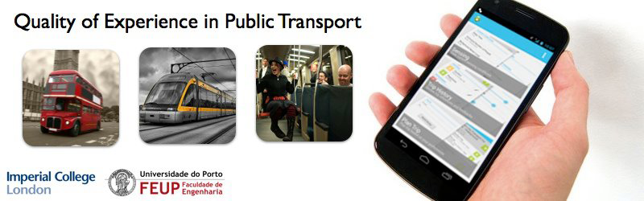

In our current society which is characterized by mobility, individuality and comfort requirements, there is a need for real-time information and services that make people’s life easier. In Public Transportation (PT), such data is crucial for enhancing the travelling experience. Lately, the number of smartphone applications for trip planning, mobile ticketing and validation has grown considerably, but they do not take into account the user’s affective state or his Quality of Experience (QoE). Emotion, that is fundamental to the human experience influencing rational decision making, is rarely taken into account.
Thus, in this work we present a new solution to find and understand patterns of user satisfaction based on the collection of affective and context information with and without direct user input. The current growth of ubiquitous systems allows the use of everyday devices, specially smartphones, wireless sensors and wearable computers to smoothly collect multi-modal sensorial data during trips. While the user input serves as a solid validation of the information received. A PT mobile service then uses these preference profiles to suggest more comfortable routes according to the user likings through a smartphone application. This adds a new domain of personal preferences to the usual duration, cost and number of changes in the transportation choosing criteria.
In this work we present a mobile sensing platform based on the mobile application responsible for collection trip data and user input, and its communication with the reasoning system in the cloud - the Cloud2Bubble (C2B) framework.
Link: Experiment: PTSense App | Cloud2Bubble The background of the framework and its experiments, by Pedro Maurício Costa.
Link: PTSense - Aplicações Android no Google Play The app available to download on Google's Play Store.
J. G. Vieira, P. M. Costa, T. Galvao, J. Pitt and J. F. e. Cunha. “Smart Mobile Sensing for Measuring Quality of Experience in Urban Public Transports”. Paper presented at The Second International Workshop on Smart Mobile Applications (SmartApps'12), Newcastle, UK, June 19, 2012.
P. M. Costa, J. Pitt, J. G. Vieira, T. Galvao and J. F. e Cunha. “Investigating Mobile Quality of Experience in Public Transport”. Poster presented at The 14th Edition of ACM SIGCHI's International Conference on Human-Computer Interaction with Mobile Devices and Services (MobileHCI), San Francisco, USA, September 21-24, 2012.
Final presentation adapted from the SmartApps workshop. It provides a summary of the whole development, objectives, motivation, tests, findings, key benefits and advantages and future work directives of this research. Download as: PDF
PTSense mobile application for Android. See more information and download in the Google Play Store application page above.
PTSense mobile aplication User Manual given to participants of the Feature Test in Porto. Here is briefly explained the purpose and context of the experiment along with guidelines for installing, using and initializing the test. Download as: PDF
Documents given and used by participants of the Usability Test in London. These inform the user about the experiment and testing procedure. Also simple questionaires were made for result analysis.
Participant Information Sheet & Consent Form. Download as: PDF
Test Script. Download as: PDF
Pre and Post-Questionaire and results. Not available
Totally functional prototype including all the features from the design phase. The objective was to test usability and understandability principles in the mobile application with potential ordinary users.
Prototype used for Usability Tests in London. Download as: PDF
First non-functional prototype. View as: PNG
{kind=link}